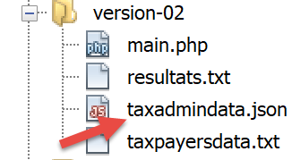

4. Übungsaufgabe – Versionen 1 und 2
4.1. Die Aufgabe

Die obige Tabelle ermöglicht es Ihnen, die Steuer im vereinfachten Fall eines Steuerpflichtigen zu berechnen, der nur sein Gehalt anzugeben hat. Wie in Anmerkung (1) angegeben, handelt es sich bei der auf diese Weise berechneten Steuer um die Steuer vor Anwendung von drei Mechanismen:
- die Obergrenze des Familienquotienten, die für hohe Einkommen gilt;
- die Steuergutschrift und die Steuerermäßigung, die für niedrige Einkommen gelten;
Die Steuerberechnung umfasst somit die folgenden Schritte [http://impotsurlerevenu.org/comprendre-le-calcul-de-l-impot/1217-calcul-de-l-impot-2019.php]:

Wir schlagen vor, ein Programm zu schreiben, das die Steuer eines Steuerpflichtigen im vereinfachten Fall berechnet, in dem dieser nur sein Gehalt anzugeben hat:
4.1.1. Berechnung der Bruttosteuer
Die Bruttosteuer lässt sich wie folgt berechnen:
Zunächst berechnen wir die Anzahl der Anteile des Steuerpflichtigen:
- Jeder Elternteil bringt 1 Anteil ein;
- Die ersten beiden Kinder bringen jeweils 1/2 Anteil ein;
- die übrigen Kinder bringen jeweils einen Anteil ein:
Die Anzahl der Anteile beträgt daher:
- nbParts=1+nbChildren*0,5+(nbChildren-2)*0,5, wenn der Arbeitnehmer unverheiratet ist;
- nbParts = 2 + nbChildren * 0,5 + (nbChildren - 2) * 0,5, wenn er verheiratet ist;
wobei nbChildren die Anzahl der Kinder ist;
- wir berechnen das zu versteuernde Einkommen R = 0,9 * S, wobei S das Jahresgehalt ist;
- Der Familienquotient QF wird wie folgt berechnet: QF = R / nbParts;
- Wir berechnen die Bruttosteuer I auf der Grundlage der folgenden Daten (2019):
9964 | 0 | 0 |
27.519 | 0,14 | 1.394,96 |
73.779 | 0,3 | 5.798 |
156.244 | 0,41 | 13.913,69 |
0 | 0,45 | 20163,45 |
Jede Zeile enthält 3 Felder: Feld1, Feld2, Feld3. Um die Steuer I zu berechnen, suchen wir die erste Zeile, in der QF <= Feld1 ist, und übernehmen die Werte aus dieser Zeile. Beispiel für einen verheirateten Arbeitnehmer mit zwei Kindern und einem Jahresgehalt S von 50.000 Euro:
Steuerpflichtiges Einkommen: R=0,9*S=45.000
Anzahl der Anteile: nbParts=2+2*0,5=3
Familienquotient: QF=45.000/3=15.000
Die erste Zeile, in der QF <= Feld1 gilt, lautet wie folgt:
Die Steuer I beträgt dann 0,14*R – 1394,96*AnzahlAktien=[0,14*45000-1394,96*3]=2115. Die Steuer wird auf den nächsten Euro abgerundet.
Wenn in der ersten Zeile die Bedingung QF <= Feld1 erfüllt ist, beträgt die Steuer null.
Wenn QF so ist, dass die Bedingung QF <= Feld1 niemals erfüllt ist, werden die Koeffizienten aus der letzten Zeile verwendet. Hier:
was die Bruttosteuer I = 0,45*R – 20163,45*nbParts ergibt.
4.1.2. Obergrenze des Familienquotienten

Um festzustellen, ob die Obergrenze für den Familienquotienten (QF) gilt, berechnen wir die Bruttosteuer ohne die Kinder neu. Noch einmal für den verheirateten Arbeitnehmer mit zwei Kindern und einem Jahresgehalt S von 50.000 Euro:
Steuerpflichtiges Einkommen: R = 0,9 * S = 45.000
Anzahl der Anteile: nbParts=2 (Kinder werden nicht mehr berücksichtigt)
Familienquotient: QF = 45.000 / 2 = 22.500
Die erste Zeile, in der QF <= Feld1 gilt, lautet wie folgt:
Die Steuer I beträgt dann 0,14*R – 1394,96*Anzahl der Aktien = [0,14*45.000 – 1394,96*2] = 3.510.
Maximaler Kinderfreibetrag: 1551 * 2 = 3102 Euro
Mindeststeuer: 3.510 – 3.102 = 408 Euro
Die Bruttosteuer mit 3 Steuerklassen, die bereits auf 2.115 Euro berechnet wurde, ist höher als die Mindeststeuer von 408 Euro, daher gilt die Familienobergrenze hier nicht.
Im Allgemeinen ist die Bruttosteuer größer als (Steuer1, Steuer2), wobei:
- [Steuer1]: die Bruttosteuer ist, die unter Berücksichtigung der Kinder berechnet wurde;
- [Steuer2]: die Bruttosteuer ist, die ohne Kinder berechnet und um den maximalen Kinderfreibetrag (hier 1.551 Euro pro Halbanteil) reduziert wurde;
4.1.3. Berechnung der Steuerermäßigung

Weiterhin für den verheirateten Arbeitnehmer mit zwei Kindern und einem Jahresgehalt S von 50.000 Euro:
Die Bruttosteuer (2.115) aus dem vorherigen Schritt liegt unter 2.627 Euro für ein Ehepaar (1.595 Euro für eine alleinstehende Person): Die Steuerermäßigung kommt daher zur Anwendung. Sie berechnet sich wie folgt:
Ermäßigung = Schwellenwert (Ehepaar = 1.970 / Alleinstehender = 1.196) – 0,75 * Bruttosteuer
Rabatt = 1.970 – 0,75 * 2.115 = 383,75, gerundet auf 384 Euro.
Neue Bruttosteuer = 2.115 – 384 = 1.731 Euro
4.1.4. Berechnung der Steuerermäßigung

Unterhalb einer bestimmten Schwelle wird eine Ermäßigung von 20 % auf die aus den vorangegangenen Berechnungen resultierende Bruttosteuer angewendet. Im Jahr 2019 gelten folgende Schwellenwerte:
- Alleinstehende: 21.037 Euro;
- Paare: 42.074 Euro; (die im obigen Beispiel verwendete Zahl 37.968 scheint falsch zu sein);
Dieser Schwellenwert wird um den Wert 3.797 * (Anzahl der von den Kindern eingebrachten Halbanteile) erhöht.
Noch einmal für den verheirateten Arbeitnehmer mit zwei Kindern und einem Jahresgehalt S von 50.000 Euro:
- liegt sein zu versteuerndes Einkommen (45.000 Euro) unter dem Schwellenwert (42.074 + 2 × 3.797) = 49.668 Euro;
- er hat daher Anspruch auf eine Steuerermäßigung von 20 %: 1.731 * 0,2 = 346,2 Euro, aufgerundet auf 347 Euro;
- die Bruttosteuer des Steuerpflichtigen beträgt: 1.731 – 347 = 1.384 Euro;
4.1.5. Berechnung der Nettosteuer
Unsere Berechnung endet hier: Die zu zahlende Nettosteuer beträgt 1.384 Euro. In der Realität hat der Steuerpflichtige möglicherweise Anspruch auf weitere Abzüge, insbesondere für Spenden an gemeinnützige oder im öffentlichen Interesse tätige Organisationen.
4.1.6. Fälle mit hohem Einkommen
Unser vorheriges Beispiel gilt für die Mehrheit der Arbeitnehmer. Für Personen mit hohem Einkommen sieht die Steuerberechnung jedoch anders aus.
4.1.6.1. Obergrenze für die 10-prozentige Ermäßigung des Jahreseinkommens
In den meisten Fällen wird das zu versteuernde Einkommen nach folgender Formel berechnet: R = 0,9 × S, wobei S das Jahresgehalt ist. Dies wird als 10-Prozent-Abzug bezeichnet. Dieser Abzug ist begrenzt. Im Jahr 2019
- darf sie 12.502 Euro nicht überschreiten;
- sie darf nicht weniger als 437 Euro betragen;
Betrachten wir den Fall eines unverheirateten Arbeitnehmers ohne Kinder mit einem Jahresgehalt von 200.000 Euro:
- Die 10-prozentige Kürzung beträgt 200.000 Euro > 12.502 Euro. Sie ist daher auf 12.502 Euro begrenzt;
4.1.6.2. Obergrenze für den Familienquotienten
Betrachten wir einen Fall, in dem die im verlinkten Absatz erwähnte Familienobergrenze gilt. Nehmen wir den Fall eines Paares mit drei Kindern und einem Jahreseinkommen von 100.000 Euro. Gehen wir die Berechnungsschritte noch einmal durch:
- Der 10-prozentige Abzug beträgt 10.000 Euro < 12.502 Euro. Das zu versteuernde Einkommen R beträgt daher 100.000 – 10.000 = 90.000 Euro;
- Das Paar hat nbParts = 2 + 0,5 * 2 + 1 = 4 Anteile;
- ihr Familienquotient beträgt daher QF = R / nbParts = 90.000 / 4 = 22.500 Euro;
- ihre Bruttosteuer I1 mit Kindern beträgt I1 = 0,14 × 90.000 – 1.394,96 × 4 = 7.020 Euro;
- ihre Bruttosteuer I2 ohne Kinder:
- QF = 90.000 / 2 = 45.000 Euro;
- I2 = 0,3 × 90.000 – 5.798 × 2 = 15.404 Euro;
- die Obergrenze für den Familienquotienten besagt, dass der durch Kinder gewährte Vorteil (1.551 × 4 halbe Anteile) = 6.204 Euro nicht überschreiten darf. Hier beträgt er jedoch I2 – I1 = 15.404 – 7.020 = 8.384 Euro, was mehr als 6.204 Euro ist;
- die Bruttosteuer wird daher neu berechnet als I3 = I2 – 6.204 = 15.404 – 6.204 = 9.200 Euro;
Dieses Paar erhält weder eine Steuergutschrift noch eine Ermäßigung, und seine endgültige Steuer beträgt 9.200 Euro.
4.1.7. Offizielle Zahlen
Die Steuerberechnung ist komplex. In diesem Dokument werden anhand der folgenden Beispiele Berechnungen durchgeführt. Die Ergebnisse stammen aus dem Simulator der Steuerbehörde [https://www3.impots.gouv.fr/simulateur/calcul_impot/2019/simplifie/index.htm]:
Steuerzahler | Offizielle Ergebnisse | Ergebnisse des Algorithmus in diesem Dokument |
Paar mit 2 Kindern und einem Jahreseinkommen von 55.555 Euro | Steuer = 2.815 Euro Steuersatz = 14 % | Steuer = 2.814 Euro Steuersatz = 14 % |
Paar mit 2 Kindern und einem Jahreseinkommen von 50.000 Euro | Steuer = 1.385 Euro Steuergutschrift = 720 Euro Ermäßigung = 0 Euro Steuersatz = 14 % | Steuer = 1.384 Euro Abzug = 384 Euro Gutschrift = 347 Euro Steuersatz = 14 % |
Paar mit 3 Kindern und einem Jahreseinkommen von 50.000 Euro | Steuer = 0 Euro Steuergutschrift = 384 Euro Ermäßigung = 346 Euro Steuersatz = 14 % | Steuer = 0 Euro Rabatt = 720 Euro Ermäßigung = 0 Euro Steuersatz = 14 % |
Alleinerziehend mit 2 Kindern und einem Jahreseinkommen von 100.000 Euro | Steuer = 19.884 Euro Steuergutschrift = 0 Euro Abzug = 0 Euro Steuersatz = 41 % | Steuer = 19.884 Euro Zuschlag = 4.480 Euro Rabatt = 0 Euro Ermäßigung = 0 Euro Steuersatz = 41 % |
Alleinerziehend mit 3 Kindern und einem Jahreseinkommen von 100.000 Euro | Steuer = 16.782 Euro Steuergutschrift = 0 Euro Abzug = 0 Euro Steuersatz = 41 % | Steuer = 16.782 € Zuschlag = 7.176 Euro Rabatt = 0 Euro Ermäßigung = 0 Euro Steuersatz = 41 % |
Paar mit drei Kindern und einem Jahreseinkommen von 100.000 Euro | Steuer = 9.200 Euro Steuergutschrift = 0 Euro Abzug = 0 Euro Steuersatz = 30 % | Steuer = 9.200 Euro Zuschlag = 2.180 Euro Rabatt = 0 Euro Ermäßigung = 0 Euro Steuersatz = 30 % |
Paar mit 5 Kindern und einem Jahreseinkommen von 100.000 Euro | Steuer = 4.230 Euro Steuergutschrift = 0 Euro Abzug = 0 Euro Steuersatz = 14 % | Steuer = 4.230 € Abzug = 0 Euro Abzug = 0 Euro Steuersatz = 14 % |
Alleinstehend, keine Kinder, Jahreseinkommen von 100.000 Euro | Steuer = 22.986 Euro Steuergutschrift = 0 Euro Abzug = 0 Euro Steuersatz = 41 % | Steuer = 22.986 Euro Zuschlag = 0 Euro Rabatt = 0 Euro Ermäßigung = 0 Euro Steuersatz = 41 % |
Paar mit 2 Kindern und einem Jahreseinkommen von 30.000 Euro | Steuer = 0 Euro Steuergutschrift = 0 Euro Abzug = 0 Euro Steuersatz = 0 % | Steuer = 0 Euro Rabatt = 0 Euro Abzug = 0 Euro Steuersatz = 0 % |
Alleinstehend, keine Kinder, Jahreseinkommen von 200.000 Euro | Steuer = 64.211 Euro Steuergutschrift = 0 Euro Abzug = 0 Euro Steuersatz = 45 % | Steuer = 64.210 Euro Zuschlag = 7.498 Euro Rabatt = 0 Euro Ermäßigung = 0 Euro Steuersatz = 45 % |
Paar mit 3 Kindern und einem Jahreseinkommen von 200.000 Euro | Steuer = 42.843 Euro Steuergutschrift = 0 Euro Abzug = 0 Euro Steuersatz = 41 % | Steuer = 42.842 Euro Zuschlag = 17.283 Euro Rabatt = 0 Euro Ermäßigung = 0 Euro Steuersatz = 41 % |
Im obigen Beispiel bezieht sich der „Zuschlag“ auf den zusätzlichen Betrag, den Personen mit hohem Einkommen aufgrund von zwei Faktoren zahlen:
- die Obergrenze für den 10-prozentigen Abzug vom Jahreseinkommen;
- die Obergrenze für den Familienfreibetrag;
Dieser Indikator konnte nicht überprüft werden, da er im Simulator der Steuerbehörde nicht bereitgestellt wird.
Wir können sehen, dass der Algorithmus des Dokuments jedes Mal den korrekten Steuerbetrag berechnet, wenn auch mit einer Abweichung von 1 Euro. Diese Abweichung resultiert aus der Rundung. Alle Geldbeträge werden in einigen Fällen auf den nächsten Euro aufgerundet und in anderen Fällen auf den nächsten Euro abgerundet. Da ich mit den offiziellen Regeln nicht vertraut war, wurden die Geldbeträge im Algorithmus des Dokuments gerundet:
- bei Rabatten und Ermäßigungen auf den nächsten Euro aufgerundet;
- auf den nächsten Euro abwärts bei Zuschlägen und der endgültigen Steuer;
Im folgenden Abschnitt werden Tests durchgeführt, um die Gültigkeit der Ergebnisse zu überprüfen. Sie werden anhand der Beispiele aus der vorherigen Tabelle mit einer akzeptierten Fehlermarge von 1 Euro durchgeführt.
4.2. Die Verzeichnisstruktur des Skripts

4.3. Version 1
4.3.1. Der Algorithmus
Wir stellen ein erstes Programm vor, in dem:
- die zur Berechnung der Steuer benötigten Daten als Arrays und Konstanten fest im Programm codiert sind;
- die Steuerzahlerdaten (verheiratet, Kinder, Gehalt) in einer ersten Textdatei [taxpayersdata.txt] gespeichert sind;
- die Ergebnisse der Steuerberechnung (verheiratet, Kinder, Gehalt, Steuer) in einer zweiten Textdatei [resultats.txt] gespeichert werden;
Das Skript [version-01/main.php] lautet wie folgt:
<?php
// strict types for function parameters
declare(strict_types=1);
// global constants
define("PLAFOND_QF_DEMI_PART", 1551);
define("PLAFOND_REVENUS_CELIBATAIRE_POUR_REDUCTION", 21037);
define("PLAFOND_REVENUS_COUPLE_POUR_REDUCTION", 42074);
define("VALEUR_REDUC_DEMI_PART", 3797);
define("PLAFOND_DECOTE_CELIBATAIRE", 1196);
define("PLAFOND_DECOTE_COUPLE", 1970);
define("PLAFOND_IMPOT_COUPLE_POUR_DECOTE", 2627);
define("PLAFOND_IMPOT_CELIBATAIRE_POUR_DECOTE", 1595);
define("ABATTEMENT_DIXPOURCENT_MAX", 12502);
define("ABATTEMENT_DIXPOURCENT_MIN", 437);
// definition of local constants
$DATA = "taxpayersdata.txt";
$RESULTATS = "resultats.txt";
$limites = array(9964, 27519, 73779, 156244, 0);
$coeffR = array(0, 0.14, 0.3, 0.41, 0.45);
$coeffN = array(0, 1394.96, 5798, 13913.69, 20163.45);
// reading data
$data = fopen($DATA, "r");
if (!$data) {
print "Impossible d'ouvrir en lecture le fichier des données [$DATA]\n";
exit;
}
// open results file
$résultats = fopen($RESULTATS, "w");
if (!$résultats) {
print "Impossible de créer le fichier des résultats [$RESULTATS]\n";
exit;
}
// use the current line of the data file
while ($ligne = fgets($data, 100)) {
// remove any end-of-line marker
$ligne = cutNewLineChar($ligne);
// we retrieve the 3 fields married:children:salary which form $ligne
list($marié, $enfants, $salaire) = explode(",", $ligne);
// tax calculation
$result = calculImpot($marié, (int) $enfants, (float) $salaire, $limites, $coeffR, $coeffN);
// enter the result in the results file
$result = ["marié" => $marié, "enfants" => $enfants, "salaire" => $salaire] + $result;
fputs($résultats, \json_encode($result, JSON_UNESCAPED_UNICODE) . "\n");
// following data
}
// close files
fclose($data);
fclose($résultats);
// end
exit;
// --------------------------------------------------------------------------
function cutNewLinechar(string $ligne): string {
// delete the end-of-line mark from $ligne if it exists
$L = strlen($ligne); // line length
while (substr($ligne, $L - 1, 1) === "\n" or substr($ligne, $L - 1, 1) === "\r") {
$ligne = substr($ligne, 0, $L - 1);
$L--;
}
// end
return($ligne);
}
// tAX CALCULATION
// --------------------------------------------------------------------------
function calculImpot(string $marié, int $enfants, float $salaire, array $limites, array $coeffR, array $coeffN): array {
…
// result
return ["impôt" => floor($impot), "surcôte" => $surcôte, "décôte" => $décôte, "réduction" => $réduction, "taux" => $taux];
}
// --------------------------------------------------------------------------
function calculImpot2(string $marié, int $enfants, float $salaire, array $limites, array $coeffR, array $coeffN): array {
…
// result
return ["impôt" => $impôt, "surcôte" => $surcôte, "taux" => $coeffR[$i]];
}
// revenuImposable=annualwage-discount
// the allowance has a minimum and a maximum
function getRevenuImposable(float $salaire): float {
…
// result
return floor($revenuImposable);
}
// calculates any discount
function getDecote(string $marié, float $salaire, float $impots): float {
…
// result
return ceil($décôte);
}
// calculates any reduction
function getRéduction(string $marié, float $salaire, int $enfants, float $impots): float {
/…
// result
return ceil($réduction);
}
Die Datendatei taxpayersdata.txt (verheiratet, Kinder, Gehalt):
Die Datei „results.txt“ (verheiratet, Kinder, Gehalt, Steuer, Zuschlag, Rabatt, Ermäßigung, Steuersatz) mit den erzielten Ergebnissen:
Kommentare
- Zeile 4: Wir erzwingen die strikte Einhaltung des Typs der Funktionsparameter;
- Zeilen 7–16: Definition aller für die Berechnung der Steuer erforderlichen Konstanten;
- Zeile 19: Name der Textdatei, die die Steuerzahlerdaten enthält (Familienstand, Kinder, Gehalt);
- Zeile 20: Name der Textdatei, die die Ergebnisse (Familienstand, Kinder, Gehalt, Steuer) der Steuerberechnung enthält;
- Zeilen 21–23: die drei Daten-Arrays, die die verschiedenen Steuerklassen für die Steuerberechnung definieren;
- Zeilen 26–30: Öffnen der Steuerzahler-Datendatei zum Lesen [r]. Die Funktion [fopen] gibt den booleschen Wert FALSE zurück, wenn die Datei nicht geöffnet werden konnte;
- Zeilen 33–37: Öffnen der Ergebnisdatei im Schreibmodus [w];
- Zeilen 40–51: Schleife zum Einlesen der Zeilen (Ehepartner, Kinder, Einkommen) aus der Steuerzahler-Datendatei;
- Zeile 40: Die Funktion [fgets] liest 100 Zeichen und stoppt beim ersten gefundenen Zeilenumbruch. Hier sind alle Zeilen kürzer als 100 Zeichen. Wird ein Zeilenumbruch gefunden, wird dieser in die zurückgegebene Zeichenkette aufgenommen. Wenn das Ende der Datei erreicht ist, gibt die Funktion [fgets] FALSE zurück;
- Zeile 42: Das Zeilenendezeichen wird entfernt;
- Zeile 44: Die Bestandteile (verheiratet, Kinder, Gehalt) der Zeile werden abgerufen;
- Zeile 46: Die Steuer wird berechnet. Das Ergebnis wird als assoziatives Array zurückgegeben (Zeile 76);
- Zeile 48: Die Schlüssel [married, children, salary] werden dem zuvor abgerufenen Array hinzugefügt;
- Zeile 49: Das Ergebnis wird als JSON-Zeichenkette in der Ergebnisdatei gespeichert;
- Zeilen 53–54: Sobald die Steuerzahler-Datendatei vollständig verarbeitet wurde, werden die Dateien geschlossen;
- Zeile 60: Die Funktion, die den Zeilenumbruch aus einer Zeile $line entfernt. Der Zeilenumbruch ist die Zeichenkette „\r\n“ auf Windows-Systemen, „\n“ auf Unix-Systemen. Das Ergebnis ist die Eingabezeichenkette ohne Zeilenumbruch.
- Zeilen 63–64: substr($string, $start, $size) ist die Teilzeichenfolge von $string, die am Zeichen $start beginnt und höchstens $size Zeichen enthält;
Die Funktion [calculImpot] lautet wie folgt:
// constantes globales
define("PLAFOND_QF_DEMI_PART", 1551);
// calcul de l'impôt
// --------------------------------------------------------------------------
function calculImpot(string $marié, int $enfants, float $salaire, array $limites, array $coeffR, array $coeffN): array {
// $marié : oui, non
// $enfants : nombre d'enfants
// $salaire : salaire annuel
// $limites, $coeffR, $coeffN : les tableaux des données permettant le calcul de l'impôt
//
// calcul de l'impôt avec enfants
$result1 = calculImpot2($marié, $enfants, $salaire, $limites, $coeffR, $coeffN);
$impot1 = $result1["impôt"];
// calcul de l'impôt sans les enfants
if ($enfants != 0) {
$result2 = calculImpot2($marié, 0, $salaire, $limites, $coeffR, $coeffN);
$impot2 = $result2["impôt"];
// application du plafonnement du quotient familial
if ($enfants < 3) {
// $PLAFOND_QF_DEMI_PART euros pour les 2 premiers enfants
$impot2 = $impot2 - $enfants * PLAFOND_QF_DEMI_PART;
} else {
// $PLAFOND_QF_DEMI_PART euros pour les 2 premiers enfants, le double pour les suivants
$impot2 = $impot2 - 2 * PLAFOND_QF_DEMI_PART - ($enfants - 2) * 2 * PLAFOND_QF_DEMI_PART;
}
} else {
$impot2 = $impot1;
$result2 = $result1;
}
// on prend l'impôt le plus fort avec le taux et la surcôte qui vont avec
if ($impot1 > $impot2) {
$impot = $impot1;
$taux = $result1["taux"];
$surcôte = $result1["surcôte"];
} else {
$surcôte = $impot2 - $impot1 + $result2["surcôte"];
$impot = $impot2;
$taux = $result2["taux"];
}
// calcul d'une éventuelle décôte
$décôte = getDecote($marié, $salaire, $impot);
$impot -= $décôte;
// calcul d'une éventuelle réduction d'impôts
$réduction = getRéduction($marié, $salaire, $enfants, $impot);
$impot -= $réduction;
// résultat
return ["impôt" => floor($impot), "surcôte" => $surcôte, "décôte" => $décôte, "réduction" => $réduction, "taux" => $taux];
}
// --------------------------------------------------------------------------
function calculImpot2(string $marié, int $enfants, float $salaire, array $limites, array $coeffR, array $coeffN): array {
…
// résultat
return ["impôt" => $impôt, "surcôte" => $surcôte, "taux" => $coeffR[$i]];
}
// revenuImposable=salaireAnnuel-abattement
// l'abattement de 10 % a un min et un max
function getRevenuImposable(float $salaire): float {
…
}
// calcule une décôte éventuelle
function getDecote(string $marié, float $salaire, float $impots): float {
…
// résultat
return ceil($décôte);
}
// calcule une réduction éventuelle
function getRéduction(string $marié, float $salaire, int $enfants, float $impots): float {
…
// résultat
return ceil($réduction);
}
Kommentare
- Zeile 10: Die Bruttosteuer wird unter Einbeziehung der Kinder berechnet. Das Ergebnis wird in der Form ["tax" => $tax, "surcharge" => $surcharge, "rate" => $coeffR[$i]] zurückgegeben, wobei:
- [‘tax’]: die Bruttosteuer;
- [‘surcharge’]: der Betrag des Zuschlags, falls vorhanden. Dies gilt, wenn der 10-prozentige Abzug den Schwellenwert von 12.502 Euro überschreitet;
- [‘rate’]: der Steuersatz des Steuerpflichtigen;
- Zeile 11: die fällige Bruttosteuer [impot1];
- Zeilen 13–14: Wenn der Steuerpflichtige mindestens ein Kind hat, wird die Steuerberechnung mit denselben Daten, jedoch mit 0 Kindern, erneut durchgeführt. Diese zweite Berechnung ist erforderlich, um festzustellen, ob die durch die Kinder gewährte Ermäßigung (nbParts*coeffN) einen bestimmten Schwellenwert überschreitet;
- Zeile 15: die fällige Bruttosteuer [impot2];
- Zeilen 16–23: Bei der Bruttosteuer [impot2] werden nun die Kinder berücksichtigt: Jeder von den Kindern gewährte 1/2-Anteil ermöglicht eine Ermäßigung von [PLAFOND_QF_DEMI_PART] Euro;
- Zeilen 25–26: Fall, in dem der Steuerpflichtige keine Kinder hat. In diesem Fall ist die Berechnung von [impot2] nicht erforderlich. Sie entspricht [impot1];
- Zeilen 29–37: Es wurden zwei Bruttosteuern berechnet [impot1, impot2]. Die Steuerbehörde behält die höhere der beiden bei. Daraus ergibt sich eine Bruttosteuer [impot];
- Zeilen 39–40: Der Bruttobetrag [tax] kann einer Ermäßigung unterliegen;
- Zeilen 42–43: Der Bruttobetrag [impot] kann einer Ermäßigung unterliegen;
- Zeile 45: [tax] ist nun die fällige Nettosteuer. Die Ergebnisse werden zurückgegeben;
Die Funktion [calculImpot2] lautet wie folgt:
// --------------------------------------------------------------------------
function calculImpot2(string $marié, int $enfants, float $salaire, array $limites, array $coeffR, array $coeffN): array {
// $marié : oui, non
// $enfants : nombre d'enfants
// $salaire : salaire annuel
// $limites, $coeffR, $coeffN : les tableaux des données permettant le calcul de l'impôt
//
// nombre de parts
$marié = strtolower($marié);
if ($marié === "oui") {
$nbParts = $enfants / 2 + 2;
} else {
$nbParts = $enfants / 2 + 1;
}
// 1 part par enfant à partir du 3e
if ($enfants >= 3) {
// une demi-part de + pour chaque enfant à partir du 3e
$nbParts += 0.5 * ($enfants - 2);
}
// revenu imposable
$revenuImposable = getRevenuImposable($salaire);
// surcôte
$surcôte = floor($revenuImposable - 0.9 * $salaire);
// pour des pbs d'arrondi
if ($surcôte < 0) {
$surcôte = 0;
}
// quotient familial
$quotient = $revenuImposable / $nbParts;
// est mis à la fin du tableau limites pour arrêter la boucle qui suit
$limites[count($limites) - 1] = $quotient;
// calcul de l'impôt
$i = 0;
while ($quotient > $limites[$i]) {
$i++;
}
// du fait qu'on a placé $quotient à la fin du tableau $limites, la boucle précédente
// ne peut déborder du tableau $limites
// maintenant on peut calculer l'impôt
$impôt = floor($revenuImposable * $coeffR[$i] - $nbParts * $coeffN[$i]);
// résultat
return ["impôt" => $impôt, "surcôte" => $surcôte, "taux" => $coeffR[$i]];
}
// revenuImposable=salaireAnnuel-abattement
// l'abattement a un min et un max
function getRevenuImposable(float $salaire): float {
// résultat
return floor($revenuImposable);
}
Kommentare
- Hier wenden wir die Steuerberechnung unter Verwendung des progressiven Steuertarifs an;
- Zeile 9: strtolower($string) wandelt $string in Kleinbuchstaben um;
- Zeilen 10–19: Berechnung der Anzahl der Anteile des Steuerpflichtigen;
- Zeile 21: Wir berechnen das zu versteuernde Einkommen mithilfe einer Funktion. Wir haben nämlich gesehen, dass es nicht immer 0,9*AnnualIncome beträgt. Der 10-prozentige Abzug ist tatsächlich auf 12.502 Euro begrenzt;
- Zeile 23: Berechnung des möglichen Zuschlags, wenn das zu versteuernde Einkommen größer als 0,9*Jahres-Einkommen ist;
- Zeilen 25–27: Korrektur der Tatsache, dass wir aufgrund von Rundungsfehlern manchmal [$surcharge=-1] erhalten;
- Zeile 29: der Familienquotient;
- Zeilen 30–36: Dieser Quotient wird verwendet, um den Steuerklasse des Steuerpflichtigen zu bestimmen;
- Zeile 40: Sobald der Steuerklasse des Steuerpflichtigen ermittelt wurde, kann seine Bruttosteuer berechnet werden. Die Funktion floor($x) gibt die ganze Zahl zurück, die unmittelbar kleiner als [$x] ist;
- Zeile 42: Die berechneten Informationen werden zurückgegeben;
Die Funktion [getRevenuImposable] lautet wie folgt:
// constantes globales
define("ABATTEMENT_DIXPOURCENT_MAX", 12502);
define("ABATTEMENT_DIXPOURCENT_MIN", 437);
// revenuImposable=salaireAnnuel-abattement
// l'abattement a un min et un max
function getRevenuImposable(float $salaire): float {
// abattement de 10% du salaire
$abattement = 0.1 * $salaire;
// cet abattement ne peut dépasser ABATTEMENT_DIXPOURCENT_MAX
if ($abattement > ABATTEMENT_DIXPOURCENT_MAX) {
$abattement = ABATTEMENT_DIXPOURCENT_MAX;
}
// l'abattement ne peut être inférieur à ABATTEMENT_DIXPOURCENT_MIN
if ($abattement < ABATTEMENT_DIXPOURCENT_MIN) {
$abattement = ABATTEMENT_DIXPOURCENT_MIN;
}
// revenu imposable
$revenuImposable = $salaire - $abattement;
// résultat
return floor($revenuImposable);
}
Kommentare
- Zeile 5: Der Standardfreibetrag beträgt 10 % des Jahresgehalts;
- Zeilen 7–9: Der Abzug darf den Höchstbetrag [ABATTEMENT_DIXPOURCENT_MAX] nicht überschreiten;
- Zeilen 10–13: Der Abzug darf nicht unter dem Mindestabzug [ABATTEMENT_DIXPOURCENT_MIN] liegen;
- Zeile 15: Berechnung des steuerpflichtigen Einkommens;
Die Funktion [getDecote] lautet wie folgt:
// constantes globales
define("PLAFOND_DECOTE_CELIBATAIRE", 1196);
define("PLAFOND_DECOTE_COUPLE", 1970);
define("PLAFOND_IMPOT_COUPLE_POUR_DECOTE", 2627);
define("PLAFOND_IMPOT_CELIBATAIRE_POUR_DECOTE", 1595);
// calcule une décôte éventuelle
function getDecote(string $marié, float $salaire, float $impots): float {
// au départ, une décôt nulle
$décôte = 0;
// montant maximal d'tax to get the discount
$plafondImpôtPourDécôte = $marié === "oui" ? PLAFOND_IMPOT_COUPLE_POUR_DECOTE : PLAFOND_IMPOT_CELIBATAIRE_POUR_DECOTE;
if ($impots < $plafondImpôtPourDécôte) {
// montant maximal de la décôte
$plafondDécôte = $marié === "oui" ? PLAFOND_DECOTE_COUPLE : PLAFOND_DECOTE_CELIBATAIRE;
// décôte théorique
$décôte = $plafondDécôte - 0.75 * $impots;
// la décôte ne peut dépasser le montant de l'tax
if ($décôte > $impots) {
$décôte = $impots;
}
// pas de décôte <0
if ($décôte < 0) {
$décôte = 0;
}
}
// résultat
return ceil($décôte);
}
Kommentare
- Zeile 6: Höchstbetrag der Bruttosteuer, der für eine Steuerermäßigung in Frage kommt. Dieser Betrag ist für Alleinstehende und Paare unterschiedlich;
- Zeile 7: Angabe, ob der Steuerpflichtige Anspruch auf die Steuerermäßigung hat;
- Zeile 11: die Formel für die Steuergutschrift. [taxCreditCap] ist der maximale Steuergutschriftsbetrag. Dieser Höchstbetrag wird in Zeile 9 berechnet. Auch hier hängt er vom Status des Steuerpflichtigen ab – verheiratet oder alleinstehend;
- Zeilen 13–15: Der Abzug darf die geschuldete Bruttosteuer nicht übersteigen. Dies ist beispielsweise der Fall, wenn [taxes] in Zeile 11 den Wert 0 hat;
- Zeilen 17–19: um eine Rundung auf -1 zu vermeiden;
Die Funktion [getReduction] lautet wie folgt:
// constantes globales
define("PLAFOND_REVENUS_CELIBATAIRE_POUR_REDUCTION", 21037);
define("PLAFOND_REVENUS_COUPLE_POUR_REDUCTION", 42074);
define("VALEUR_REDUC_DEMI_PART", 3797);
// calcule une réduction éventuelle
function getRéduction(string $marié, float $salaire, int $enfants, float $impots): float {
// le plafond des revenus pour avoir droit à la réduction de 20%
$plafondRevenuPourRéduction = $marié === "oui" ? PLAFOND_REVENUS_COUPLE_POUR_REDUCTION : PLAFOND_REVENUS_CELIBATAIRE_POUR_REDUCTION;
$plafondRevenuPourRéduction += $enfants * VALEUR_REDUC_DEMI_PART;
if ($enfants > 2) {
$plafondRevenuPourRéduction += ($enfants - 2) * VALEUR_REDUC_DEMI_PART;
}
// revenu imposable
$revenuImposable = getRevenuImposable($salaire);
// réduction
$réduction = 0;
if ($revenuImposable < $plafondRevenuPourRéduction) {
// réduction de 20%
$réduction = 0.2 * $impots;
}
// résultat
return ceil($réduction);
}
Kommentare
- Zeilen 4–10: Um Anspruch auf eine Steuerermäßigung zu haben, muss das zu versteuernde Einkommen (Zeile 10) unter einem in den Zeilen 4–8 berechneten Schwellenwert liegen;
- Zeilen 13–16: Sind die Voraussetzungen erfüllt, hat der Steuerpflichtige Anspruch auf eine Steuerermäßigung von 20 % (Zeile 15);
4.3.2. Ergebnisse
Die Datendatei taxpayersdata.txt (verheiratet, Kinder, Gehalt):
Die Datei „results.txt“ (verheiratet, Kinder, Gehalt, Steuer, Zuschlag, Rabatt, Ermäßigung, Steuersatz) mit den erzielten Ergebnissen:
Die erzielten Ergebnisse stimmen mit denen überein, die mit dem Simulator der Steuerbehörde ermittelt wurden.
4.3.3. Fazit
Der Algorithmus zur Steuerberechnung ist selbst in Fällen, die als unkompliziert gelten, komplex. Wir werden hier nicht erneut darauf eingehen. Über verschiedene Versionen hinweg bleibt sein Kern trotz einiger Änderungen in der Darstellung derselbe. Wir werden daher nur auf Letzteres eingehen.
4.4. Version 2
4.4.1. Änderungen
In der vorherigen Version waren die zur Steuerberechnung erforderlichen Daten als Konstanten und Arrays fest codiert. Diese Methode sollte vermieden werden. In der neuen Version werden diese Daten in eine JSON-Datei ausgelagert:

Der Inhalt der Datei [taxadmindata.json] lautet wie folgt:
{
"limites": [9964, 27519, 73779, 156244, 0],
"coeffR": [0, 0.14, 0.3, 0.41, 0.45],
"coeffN": [0, 1394.96, 5798, 13913.69, 20163.45],
"PLAFOND_QF_DEMI_PART": 1551,
"PLAFOND_REVENUS_CELIBATAIRE_POUR_REDUCTION": 21037,
"PLAFOND_REVENUS_COUPLE_POUR_REDUCTION": 42074,
"VALEUR_REDUC_DEMI_PART": 3797,
"PLAFOND_DECOTE_CELIBATAIRE": 1196,
"PLAFOND_DECOTE_COUPLE": 1970,
"PLAFOND_IMPOT_COUPLE_POUR_DECOTE": 2627,
"PLAFOND_IMPOT_CELIBATAIRE_POUR_DECOTE": 1595,
"ABATTEMENT_DIXPOURCENT_MAX": 12502,
"ABATTEMENT_DIXPOURCENT_MIN": 437
}
Die neue Version [version-02/main.php] lautet wie folgt:
<?php
// strict adherence to declared function parameter types
declare (strict_types=1);
// definition of constants
$TAXPAYERSDATA = "taxpayersdata.txt";
$RESULTATS = "resultats.txt";
$TAXADMINDATA = "taxadmindata.json";
// retrieve the contents of the tax data file
$fileContents = \file_get_contents($TAXADMINDATA);
$erreur = FALSE;
// mistake?
if (!$fileContents) {
// we note the error
$erreur = TRUE;
$message = "Le fichier des données [$TAXADMINDATA] n'existe pas";
}
if (!$erreur) {
// retrieve the jSON code from the configuration file in an associative array
$taxAdminData = \json_decode($fileContents, true);
// mistake?
if (!$taxAdminData) {
// we note the error
$erreur = TRUE;
$message = "Le fichier de données jSON [$TAXADMINDATA] n'a pu être exploité correctement";
}
}
// mistake?
if ($erreur) {
print "$message\n";
exit;
}
// open results file
$résultats = fopen($RESULTATS, "w");
if (!$résultats) {
print "Impossible de créer le fichier des résultats [$RESULTATS]\n";
// output
exit;
}
// opening taxpayer data file
$taxpayersdata = fopen($TAXPAYERSDATA, "r");
if (!$taxpayersdata) {
print "Impossible d'ouvrir le fichier des contribuables [$TAXPAYERSDATA]\n";
// output
exit;
}
// use the current line of the data file
while ($ligne = fgets($taxpayersdata, 100)) {
// remove any end-of-line marker
$ligne = cutNewLineChar($ligne);
// we retrieve the 3 fields married:children:salary which form $ligne
list($marié, $enfants, $salaire) = explode(",", $ligne);
// tax calculation
$result = calculImpot($taxAdminData, $marié, (int) $enfants, (int) $salaire);
// enter the result in the results file
$result = ["marié" => $marié, "enfants" => $enfants, "salaire" => $salaire] + $result;
fputs($résultats, \json_encode($result, JSON_UNESCAPED_UNICODE) . "\n");
// following data
}
// close files
fclose($taxpayersdata);
fclose($résultats);
// end
exit;
// --------------------------------------------------------------------------
function cutNewLinechar(string $ligne) {
…
// end
return($ligne);
}
// tAX CALCULATION
// --------------------------------------------------------------------------
function calculImpot(array $taxAdminData, string $marié, int $enfants, float $salaire) {
// $marié : yes, no
// $enfants : number of children
// $salaire: annual salary
// $taxAdminData: tax administration data
//
// tax calculation with children
$result1 = calculImpot2($taxAdminData, $marié, $enfants, $salaire);
$impot1 = $result1["impôt"];
// tax calculation without children
if ($enfants != 0) {
$result2 = calculImpot2($taxAdminData, $marié, 0, $salaire);
$impot2 = $result2["impôt"];
// application of the family allowance ceiling
if ($enfants < 3) {
// $PLAFOND_QF_DEMI_PART euros for the first 2 children
$impot2 = $impot2 - $enfants * $taxAdminData["PLAFOND_QF_DEMI_PART"];
} else {
// $PLAFOND_QF_DEMI_PART euros for the first 2 children, double for subsequent children
$impot2 = $impot2 - 2 * $taxAdminData["PLAFOND_QF_DEMI_PART"] - ($enfants - 2) * 2 * $taxAdminData["PLAFOND_QF_DEMI_PART"];
}
} else {
$impot2 = $impot1;
$result2 = $result1;
}
// we take the highest tax with the rate and surcharge that go with it
if ($impot1 > $impot2) {
$impot = $impot1;
$taux = $result1["taux"];
$surcôte = $result1["surcôte"];
} else {
$surcôte = $impot2 - $impot1 + $result2["surcôte"];
$impot = $impot2;
$taux = $result2["taux"];
}
// calculation of any discount
$décôte = getDecote($taxAdminData, $marié, $salaire, $impot);
$impot -= $décôte;
// calculation of any tax reduction
$réduction = getRéduction($taxAdminData, $marié, $salaire, $enfants, $impot);
$impot -= $réduction;
// result
return ["impôt" => floor($impot), "surcôte" => $surcôte, "décôte" => $décôte, "réduction" => $réduction, "taux" => $taux];
}
// --------------------------------------------------------------------------
function calculImpot2(array $taxAdminData, string $marié, int $enfants, float $salaire) {
// $marié : yes, no
…
// result
return ["impôt" => $impôt, "surcôte" => $surcôte, "taux" => $coeffR[$i]];
}
// revenuImposable=annualwage-discount
// the allowance has a minimum and a maximum
function getRevenuImposable(array $taxAdminData, float $salaire): float {
…
// result
return floor($revenuImposable);
}
// calculates any discount
function getDecote(array $taxAdminData, string $marié, float $salaire, float $impots): float {
…
// result
return ceil($décôte);
}
// calculates any reduction
function getRéduction(array $taxAdminData, string $marié, float $salaire, int $enfants, float $impots): float {
…
// result
return ceil($réduction);
}
Kommentare
- Zeilen 11–19: Wir versuchen, den Inhalt der JSON-Datei mit dem Namen [TAXADMINDATA] zu lesen;
- Zeilen 21–30: Wenn die JSON-Datei erfolgreich gelesen wurde, wird ihr Inhalt in das assoziative Array [$taxAdminData] dekodiert;
- Zeilen 32–36: Wenn bei einem der beiden vorangegangenen Vorgänge ein Fehler aufgetreten ist, wird eine Fehlermeldung an die Konsole ausgegeben und das Programm wird beendet;
- Der Unterschied zur Version 01 besteht darin, dass hier die Steuerverwaltungsdaten (Arrays und Konstanten) im assoziativen Array [$taxAdminData] gespeichert werden, während sie in Version 01 in globalen Arrays und Konstanten gespeichert wurden. Es ist der globale Charakter dieser Konstanten, der die beiden Versionen unterscheidet:
- In Version 01 waren die Konstanten in allen Funktionen von [main.php] bekannt;
- um das gleiche Ergebnis in Version 02 zu erzielen, muss das assoziative Array [$taxAdminData] als Parameter an alle Funktionen übergeben werden (Zeilen 83, 129, 138, 145, 152);
- jede Funktion in Version 02 muss den Inhalt des Arrays [$taxAdminData] verwenden;
- Zeilen 83–126: In der Funktion [calculateTax], in der zuvor globale Konstanten oder die Arrays [limits, coeffR, coeffN] verwendet wurden, verwenden wir nun den Inhalt des als Parameter übergebenen Arrays [$taxAdminData] (Zeilen 99, 102);
- Alle anderen Funktionen werden auf die gleiche Weise umgeschrieben;
Die erhaltenen Ergebnisse entsprechen denen der vorherigen Version.
4.4.2. Fazit
Version 02 ist wesentlich flexibler als Version 01. Im Jahr 2020 wird der Algorithmus zur Steuerberechnung wahrscheinlich derselbe sein wie 2019. Nur die Steuerklassen und Berechnungskonstanten werden sich geändert haben. Es reicht dann aus, die Datei [taxadmindata.json] zu aktualisieren. Bei Version 01 muss man in den Code eingreifen, um die Steuerklassen und Berechnungskonstanten zu ändern. Es ist jedoch wahrscheinlich, dass die Personen, die die Werte der Steuerklassen und Berechnungskonstanten ändern müssen, keinen Zugriff auf den Code des Algorithmus haben.